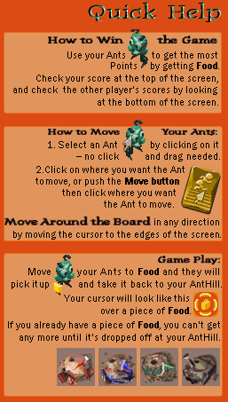
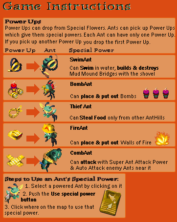

Ants!
Four colonies, one picnic.The 1998 ant war game, rebuilt for your browser.
MatchesDiscordFour colonies, one picnic.The 1998 ant war game, rebuilt for your browser.
MatchesDiscordPlayers who open this link take the next free color.
Online matches are recorded. Recordings are kept for up to 90 days. Results and names are kept for good and are public.
From Home, press Quick host, choose Public room or Invite only, and your room is ready, with the first color yours. The four colors lie as the four hills lie on the maps: Black top left, Green top right, Red bottom left, Blue bottom right. Send the link: players who open it take the next free color and show up here at once. The host drags a player onto another color to move them; a color that is taken swaps places. On a phone, tap a player's dots and then the color. A public room is listed under Games, where players join it from the list or by its code; an invite-only room shows there locked, and players join it only with its link.
A color that nobody holds can be left open for a player, given to a computer player (Easy, Medium or Hard) or set to Nobody, which keeps it out of the match.
The host can take a player out of the room with the Remove button on their color. It asks first, and the color opens up again. The player gets a room of their own, with a note that says why, and can come back by using the link again.
With three or four players (computer players count) you can play in teams: press Team 1 or Team 2 under a player. Two on the same team play together; with four players the other two are the other team. Press a lit button again to take it off. When you move a player to another color, their team goes along.
The host starts the match with whoever is in. An open color stays empty. When the match is over, Leave Game takes you back to the front page, where Quick host makes a new room.
A room lasts while anybody is in it. If the host leaves, the player who has been in the room longest becomes the host, and everybody is told. When the last player leaves, the room closes about a minute later, and a link to a room that is gone says that there is no room with that code, and offers to start a room of your own.

